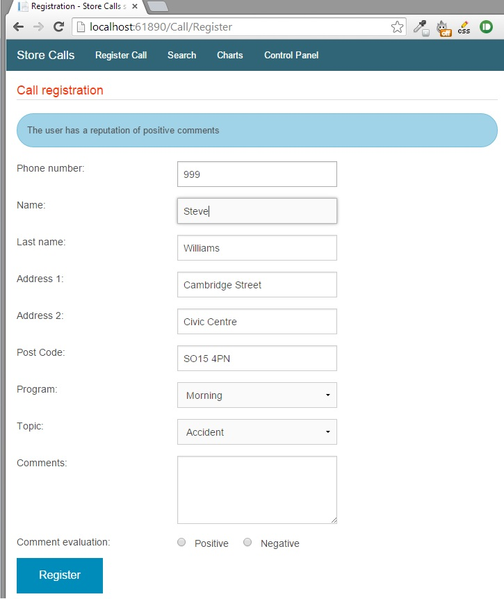

In some local TV or radio stations in Mexico, it is common that citizens can communicate over the news and give their opinion regarding any topic. Frequently, people speak to discuss political issues. However, this has caused a problem, because on several occasions people has been direspectful or has started to verbally attack others while the news is broadcasting live.
The objective of the system is to have a tool with which its possible to have a control on the incoming calls, which helps to reduce the possiblity of taking calls from people who have had a wrong behavior during newcasts.
2. Objective
The objective of the system is to help employees who are mainly related to the news, helping the company to better server to its viewers. The system will be mostly used by people who will be responsible for taking the phone calls. However, the system will also be used by reporters and/or manager of the area, in order to obtain statistics about calls, indentify trends or problems of people, consequently provide a better information service.
Having a system that stores the information, opens the possibility that reporters can follow up on the problems of the town.
3. Store Call system
The objective of this section is to help the user to know how to use the system and what to expect from it. The following video[1] shows the main page of the system and the modules that the system has:
To know more about how to access the system. Please check How to access section[1]
Showing the different options that the application has, each of this section will explain in detail in the following sections:
The register call module can be accessed for everyone that is registered on the system. The first step is to register if the employee is a new user[2]. Otherwise, login into the system using his credentials[3].
1a. First step: A new user register successfully into the system.[2] 1b. First step: A user log into the system, providing username and password.[3]
Once the user has been successfully registered or logged into the system, its going to be redirected to the registration page [4].
2. The authentication was successful, the user is redirected to the call registration page. [4]
3.3.2 How to use it?
This section demostrates the feedback can show to the employee and the information that brings from the database to help him to complete his task.
1. In order to be able to register a call, all the information must be provided. Otherwise, The system will show a message asking the user to enter the information required.
[Img.4] Scenario # 1: An error message is shown per every empty field.
3. The next image shows the historic data from the person who called (latest five calls or less) and how its presented to the employee.
[Img.6] Scenario # 2 part 2: The employee receives the historical data from the person, to provide the employee to have a quick review about the person.
2. During the registration proccess, the employee can receive feedback from the system related to the reputation of the caller given his stored information. After the employee types the phone number and focus out from the field, in case that the number is already register on the system:
A message will be shown to let the user aware of the reputation of the person who is calling.
The following fields will be filled in automatically:
Name: name and last name.
Address: address1, address2, post code.

[Img.5] Scenario # 2: The employee receives the feedback from the person calling and gets some fields filled in automatically.
3.4 Search
The search module works to help the employees to search [8] for a person to check the history of calls that has made. The next screenshot shows the look and the elements of the page. However, not all the users registered on the system have access to this section, the admin must give the proper privileges. To know more about the admin role please check Admin.
The search can be performed by name or by phone number[8]
3.4.1 Search Results
The following video[9] shows how to perform a search. The first example is by using the name criteria, it shows how the results are displayed in a table for all the records that matched the value. The second example shows how to perform a search for a particular number. Finally, the last part of the video shows the possible error messages that the system can throw and when doing what things.
The video shows how to perform a search[9] and what expect as a result.
3.4.2 Search Results - Check history
Once a search has been performed, the next step is to check the history of the person that the employee is looking for. Let's consider the next video[10] as example.
The video shows how to check the history of a person[10] and how the information is displayed on the screen.
The first section of the historical data of a person consists on showing the person details: name and address. The second section shows a table with the information registered in the system. The table shows when the call was received, during which newscast, which was the topic of interest of the person and comments that person wanted to shared, finally an evaluation of positive/negative given by the employee.
3.5 Charts
An employee that has access to this section is able to select a range of dates in order to obtain statistics about the calls. However, it depends of the admin who are the users that can access this module, to know more about admin role please check Admin. The next video[11] shows how to interact with this section and what type will be presented on the screen.
The video shows how to the system generates different charts[11].
In order to get the charts, the employee must select first a range of dates, then when clicks on "Search" button a success message is displayed to let the employee know that there are registered calls between that range of dates. Besides showing the message, a section of general information is created. This section contains a summary of the charts, for example, the total number of calls, how many people called, diversity of topics, etc.
The section of the charts presents the statitstics in a visual way, helping the employee understand the data more easily. The first chart shows in which days there were calls registered and how many. After the first one, three more charts are presented: the chart on the left represents the frequency of the topics or subject treated during the calls, similar to the chart on the middle, represents how many calls were registered during the morning or afternoon news program. Finally, the chart on the right shows the ratio between a positive or a negative comment evaluation.